HOLT NEWS, viral studies and news, explained simply
Markets
Charts show the past year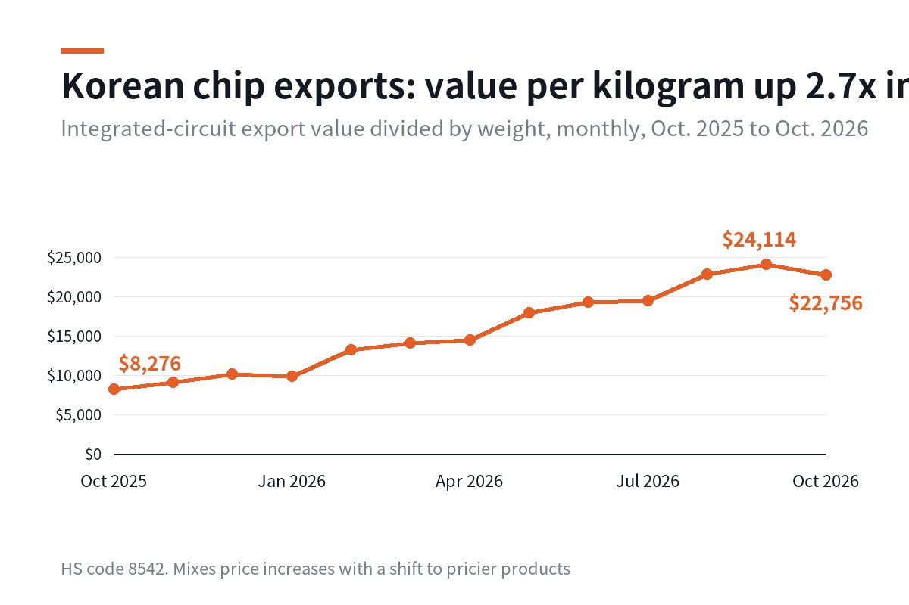
Fed's Williams points to AI chip demand in U.S. inflation as Korean chips fetch 2.7 times more per kilogram
New York Fed President John Williams said on Nov. 23 that U.S. inflation is simply too high, naming surging AI investment demand, with chips as the main example, as one of three causes. South Korea, a major memory maker, offers a rough gauge: its chips now fetch 2.7 times as much per kilogram as a year ago. October PCE inflation is due on Nov. 25.

South Korea orders large employers to disclose workplace safety records, including contractor deaths
Companies with 500 or more regular workers, large builders and public bodies must publish their safety and health records every year by April 30; under the current rules the first deadline is April 30, 2027. Those that hire contractors must also report how many contractor workers died in accidents at their sites. Failing to file carries a fine of up to 10 million won (about $7,400).


What is a chaebol? Samsung, Hyundai and Korea's family-run business groups explained
Korea's antitrust regulator lists 102 business groups with at least 5 trillion won (about $3.7 billion) in assets, led by Samsung. In the 89 that have a controlling person, usually a family, the family directly owns 3.5% of member companies' shares on a capital-weighted average. Counting the group's own companies, insiders hold 61.4%.

Kakao Pay and Toss now verify Korean ID cards. Opt-in blocks can stop loans and accounts in your name
From Nov. 23, the Ministry of the Interior and Safety said, Kakao Pay and Toss would check customers' national ID cards, photo data included, against a government system, as banks already do. That catches forged cards, not every kind of identity theft. Separate opt-in blocks let people stop new remote loans, remote account openings and open banking in their own name.


Marginal vs average tax rate: what crossing a South Korean tax bracket costs
If taxable income in South Korea rises from 50 million won to 51 million won, about $37,600 to $38,300, national income tax goes from 6.24 million won to 6.48 million won. The 24% rate applies only to the extra 1 million won. Economists call this way of reasoning thinking at the margin.Next · Incentives

Why 15 hours a week matters so much for part-time workers in South Korea
In South Korea, a part-timer contracted for 15 hours a week gets a paid weekly rest day and, after a year, severance pay. One contracted for 14 hours gets neither. From 2027, employment insurance drops the hours test for a pay test.Next · Minimum wage
Earnings
vs. same quarter last yearBellwethers
| Company | Revenue | Operating profit |
|---|---|---|
| Samsung Electronics (opens in new tab)Q3 2026 | ₩195.2T ▲126.9% | ₩107.4T ▲783.1% |
| Hyundai Motor (opens in new tab)Q3 2026 | ₩45.1T ▼3.4% | ₩2.7T ▲5.5% |
| KB Financial Group (opens in new tab)Q3 2026 | ₩13.8T ▲114.5% | ₩1.6T 0.0% |
| NAVER (opens in new tab)Q3 2026 | ₩2.0T ▲7.7% | ₩322.6B ▼40.2% |
| Alphabet (opens in new tab)Q3 2026 | $127.6B ▲24.7% | $40.6B ▲29.9% |
| Walmart (opens in new tab)Q3 2026 | $186.8B ▲5.1% | $7.8B ▲16.0% |
| JPMorgan (opens in new tab)Q3 2026 | $50.2B ▲8.1% | $20.1B ▲7.4% |
| Coca-Cola (opens in new tab)Q3 2026 | $13.4B ▲7.4% | $4.5B ▲12.1% |
Next reports
| When | Company | Report |
|---|---|---|
| Nov 25 Wed | KOGAS (opens in new tab) | Earnings call |
| Early Jan | Samsung Electronics | Q4 2026 & full year |
| Mid Jan | JPMorgan | Q4 2026 & full year |
| Late Jan | Hyundai Motor | Q4 2026 & full year |
| Early Feb | Alphabet | Q4 2026 & full year |
| Early Feb | KB Financial Group | Q4 2026 & full year |
| Early Feb | NAVER | Q4 2026 & full year |
| Early Feb | Coca-Cola | Q4 2026 & full year |
| Mid Feb | Walmart | Q4 2026 & full year |
Data: DART and SEC filings · Korean figures preliminary, consolidated · JPMorgan: pre-tax income · next report dates estimated from last year's · updated Nov 24, 17:41 KST
Games

South Korea gives savers three years after maturity to turn savings insurance into an annuity
From Dec. 1, South Koreans whose savings-type life insurance has matured can convert an uncollected payout into an annuity for up to three years, if the policy has a conversion rider. Our sums on the regulator's example show a 65-year-old man would have to live past 86 for the monthly payments to add up to his 100 million won.
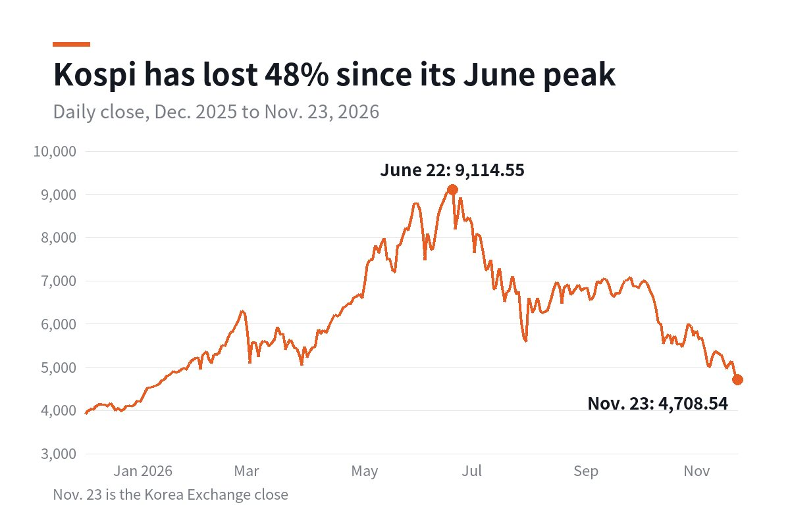
The Kospi is down 48% from its peak. Seoul is preparing its stabilization fund and easing buyback limits
South Korea's benchmark closed at 4,708.54 on Nov. 23, down 48% from its June 22 record close. From Nov. 24, listed companies can order a whole reported buyback in one day, and the government is preparing a stock market stabilization fund. The 2020 version was 10.7 trillion won. No size or trigger has been announced for this one.

South Korea to US West Coast container freight rates up 82% in October 2026, customs data show
South Korea's exports doubled in value in early November, but ocean freight data tell a narrower story. Outbound container rates to the US West Coast were 82% higher in October than a year earlier and to the EU 48% higher, while rates to China, Japan and Vietnam were roughly flat or lower. From June to October, loaded boxes rose 17% to the US and 70% to the EU.

South Korea's imports jumped 39% in the first 20 days of November 2026. Chips and energy explain most of it
Korea bought $14.2 billion more from abroad than a year earlier. Four items make up 69% of that: chips, crude oil, gas and chipmaking equipment. Everything else grew 17.6%. Over the past 12 months Korea paid far more for crude oil and chips while their weight barely moved.
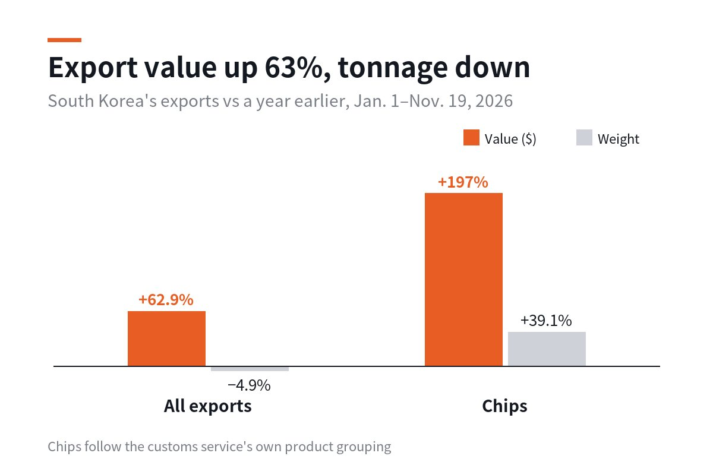
South Korea's exports double in first 20 days of November 2026 on chips, yet this year's cargo weighs 4.9% less
Exports doubled from a year earlier in the first 20 days of November, and the year's total has passed $1 trillion. The cargo behind it, through Nov. 19, weighs 4.9% less than a year earlier. Customs data show which products earned more per kilogram and which actually shipped more.

South Korea plans a tool to find unclaimed medical insurance in 2027, but some claims will lapse first
South Korea's regulator plans to launch, in the first quarter of 2027, a tool to find unclaimed private medical insurance it estimates at up to 1 trillion won. Claims lapse three years after a visit, so bills from late 2023 will expire before any first-quarter launch, and some from early 2024 may too.

South Korea now imports more cars from China than from Germany by value, and 92% of those from China are electric
South Korea imported $4.22 billion of passenger cars made in China in January–October 2026, just ahead of Germany's $4.19 billion, Korea Customs Service data show. Battery electric cars made up 92.0% of the Chinese total. The Korea–China free trade agreement, in force since 2015, left cars out of its tariff cuts.

The Big Mac index 2026 puts Pakistan and South Korea at almost the same price
In The Economist's July 2026 Big Mac index, a Big Mac cost $3.89 in Pakistan and $3.84 in South Korea. That is almost the same price. Measured against income, the burden is more than 20 times heavier in Pakistan.

South Korea limits fuel exports as value per tonne jumps 82% after Hormuz disruption
South Korea's refined product exports earned an average $1,239 a tonne from March to October, 82.0% more than a year earlier, by our calculation from customs data. The average cost of its crude imports rose 42.1% a tonne, and fuel export volume fell 10.4%, while government export limits stayed in place. The limits are now easing for diesel.

Korea offers half-price premiums to switch old medical policies. In year four, the bill doubles
From Nov. 23, South Koreans holding the oldest private medical policies can move to their insurer's current plan and pay half its premium for three years. In the regulator's example, a 177,000-won monthly bill falls to 21,620 won, then doubles in year four, and cutting other cover on the same policy ends the discount.

Transshipment makes up 60% of Busan's Q3 container traffic, up 20% from a year earlier
Of the 6.77 million TEU handled at Busan in July–September, 60% was transshipment: other countries' cargo changing ships. Incheon's seaport mostly serves direct routes to nearby Asian ports. And by value, 55.8% of South Korea's exports left through airports in the 12 months to October.

The $25 minimum wage bill has two versions. Only the Senate's makes $25 a floor
The Living Wage For All Act, Democrats' $25 minimum wage bill, has House and Senate versions that are often treated as one. They aren't. The House text caps the wage at two-thirds of the median hourly wage, about $16 at today's median.

Korean ramen exports jump 24%, with Mexico and UK growing fastest; seaweed prices to Japan slide 23%
South Korea's exports of instant noodles (ramyeon, HS 190230) rose 24.4% to $1.98 billion in the 12 months to October. Shipments to Mexico grew 2.6-fold and to the UK and Canada by more than 40%. Edible seaweed exports to Japan, including dried laver, fell 24.3% as the price per kilogram dropped 22.7%. Figures are HOLT NEWS calculations from Korea Customs Service data; factory data come from the companies' quarterly reports filed on DART, Korea's corporate disclosure system.

More Japanese lenders offer 50-year mortgages, while Korea caps terms at 30 years around Seoul
More than half of Japanese lenders in a government survey now offer variable-rate home loans of up to 50 years, and Japan's Financial Services Agency says it is watching them. South Korea went the other way in 2025, capping mortgage terms around Seoul at 30 years. The arithmetic shows why both regulators care.

Missed Korea's earned income tax credit in May? You can still claim until Dec. 1, at 95%
South Korea's tax agency has written to 260,000 households that may qualify for work and child tax credits on their 2025 income but did not claim them. Late claims close Dec. 1 and pay 95% of the full amount. Here is how the credit is calculated, and what can shrink it.

Amazon and United block AI shopping agents as Walmart lets them buy
United, Amazon, JPMorgan and eBay are shutting out customers' AI agents; Walmart and Shopify are letting them in with limits. The split tracks two questions: who keeps the sale, and who pays when an agent buys the wrong thing.

Korea's wrap accounts have no legal single-stock cap, FSS warns, after a client ended up 90% in high-risk KOSDAQ shares
Korea's financial watchdog on Nov. 16 published complaints about brokerage wrap accounts, where clients hand stock-picking to the broker. Unlike mutual funds, these accounts have no legal single-stock limit, and exit fees and capital gains tax on overseas shares have caught some investors out.
Fed Financial Stability Report flags AI data center debt and off-balance-sheet commitments
The Federal Reserve's November 13 Financial Stability Report sets out how AI data centers are being financed. Debt issued for advanced computing passed $680 billion this year, and seven big tech firms have more than $3 trillion, undiscounted, in leases, guarantees and other commitments that sit off their balance sheets. Each figure measures something different.

The US overtakes China as the top market for Korean skincare, while UK and Dutch sales surge
Korea's skincare exports to the US rose 40% to $2.06 billion in the 12 months to October, while shipments to China fell 2%. Exports to the UK nearly tripled and to the Netherlands more than quadrupled. Among Korea's nine largest skincare markets, US-bound shipments had the lowest declared value per kilogram. Figures are HOLT NEWS calculations from Korea Customs Service data; capacity plans come from manufacturers' regulatory filings.

Does the Korea-China FTA services deal end China's hallyu ban? Not quite
China pledged to treat Korean films and games no worse than any other country's, but its content screening stays in place. None of it applies until the deal is signed and in force, which took about 13 months last time.
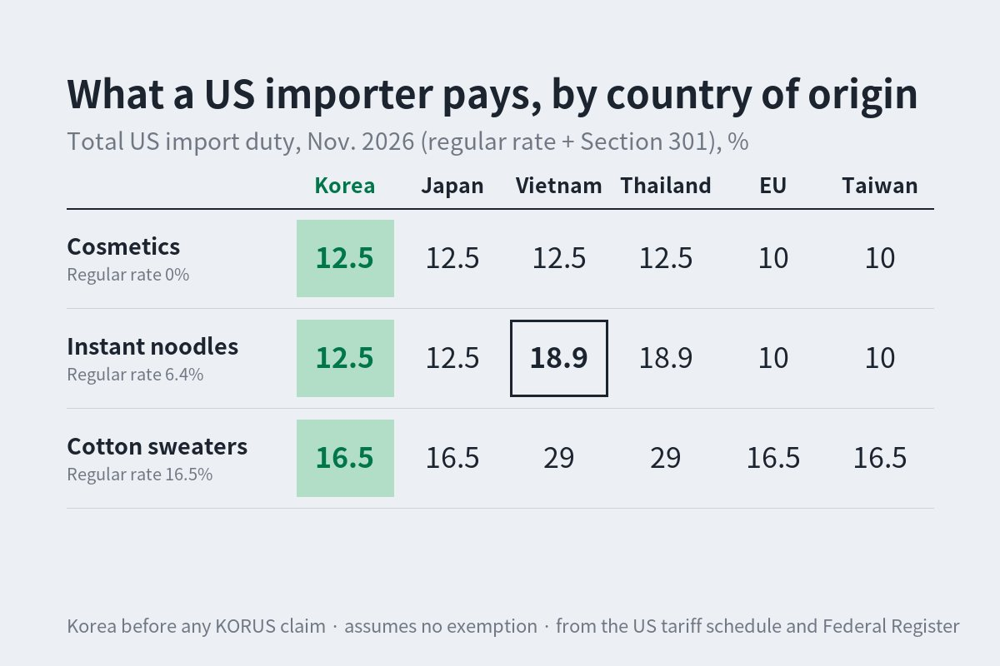
The same 12.5% Section 301 tariff costs Korean goods less than Vietnamese ones
For goods entered on or after July 24, 2026, a Section 301 duty tops Korean goods with a duty rate below 12.5% up to a combined 12.5%. Goods from Vietnam and Thailand pay 12.5% on top of their regular rate. On instant noodles, with a 6.4% regular rate, that is 12.5% from Korea (without a KORUS claim) and 18.9% from Vietnam.

Oil prices are falling. Why South Korea's gas price cap hasn't moved
South Korea has kept its cap on refiners' gasoline price at 1,784 won (about $1.34) a litre for a sixth straight round, through December 11. Brent has eased from its October average but is still about a third above where it was when the cap was set in late June. When costs exceed the cap, refiners absorb the difference; the government has promised compensation, settled quarterly and based on refiners' costs rather than world fuel prices.

Chinese hot-rolled steel imports to South Korea fell 77% after anti-dumping duties, and Japan now supplies 65%
Imports of Chinese hot-rolled steel into South Korea fell 77% in January–October 2026 after anti-dumping duties. Japan now supplies 65% of Korea's hot-rolled imports, up from 44%; Taiwan and Vietnam grew several-fold; and Chinese products outside the duties, cold-rolled coil and semi-finished steel such as slab, rose 58% and 88%.

Brazil, Australia and Spain gain share of Korea's chicken, beef and pork imports
Over the past 12 months Brazil supplied 80% of Korea's chicken-cut imports by value, up from 71%, while Thailand fell to 16%. Australia gained in frozen beef even though US beef became duty-free in January, and Spain overtook the US in frozen pork import value despite a higher average price per kilogram. Our calculations from Korea Customs Service data.

Korea's main mortgage rate index hits 3.62%, its highest in two years and eight months
The cost-of-funds index most widely used for Korean variable-rate mortgages rose to 3.62% in October, its highest in two years and eight months. A sister index published the same day sits at 2.93%. The gap between them is the widest since early 2023, and which one a loan tracks decides how fast the borrower's payment climbs.

South Korea set to top $1 trillion in exports, decades after selling chipmunks
South Korea's exports this year reached $963.7 billion by Nov. 10, and at the current pace they would pass $1 trillion around Nov. 19-20, which would make it only the fourth country to do so. In the 1960s and '70s it was selling wild chipmunks as pets and urine collected from public toilets to make medicine. We compared the two eras using customs data.

Container freight from the US to South Korea now costs a quarter of the outbound rate or less
In October 2026, a 40-foot container from the US West Coast to South Korea cost 24% of the rate for the same box going the other way, down from 92% a year earlier. Korean port data show a lopsided lane, with about a third of containers from the US arriving empty, but that imbalance was much the same a year ago.
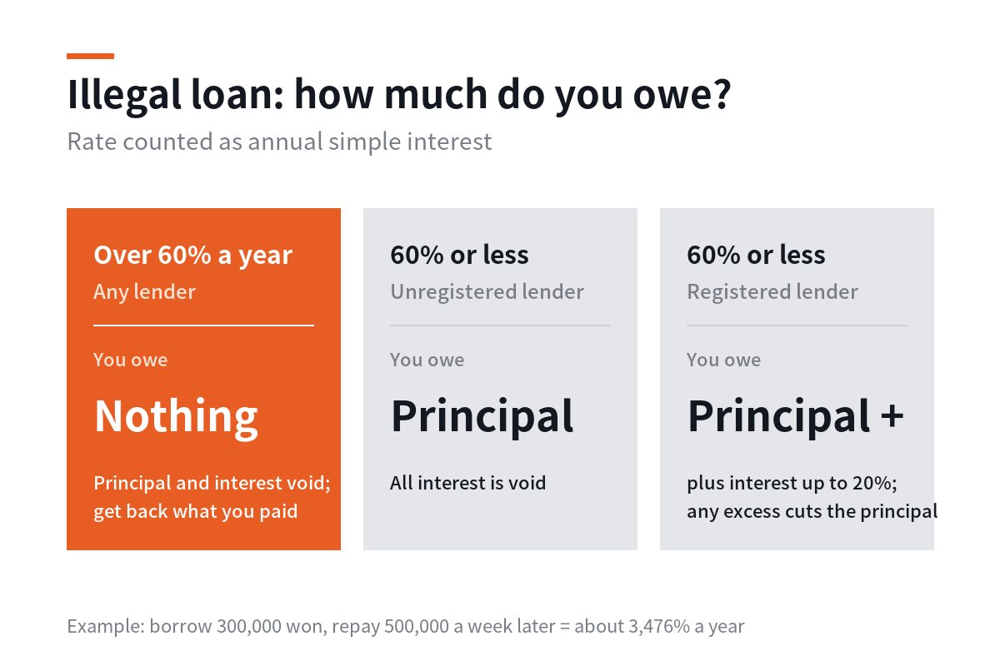
South Korea loan sharks: loans above 60% interest are void, and victims can now seek help online
South Korea's illegal-loan victims can now ask for help online instead of visiting a center. Under a 2025 law, a private loan priced above 60% a year is void in full, principal included. Here is how the rate is calculated, and what borrowers under the line can still refuse to pay.
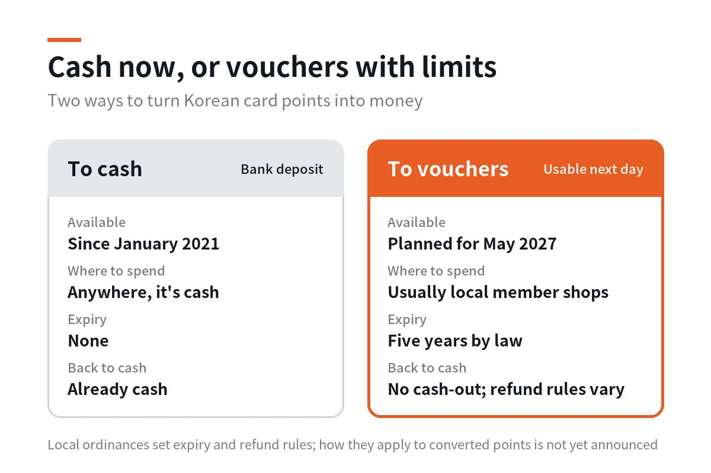
South Korea to let credit card points become local currency from 2027
Under a government plan, Korean cardholders could move credit card points, a 2.1 trillion won (about $1.6 billion) pool, into city and county vouchers from May 2027. The same points can already be cashed out. Vouchers come with legal limits on where they can be spent and when leftover money comes back.

Korea's top tax exam scorer admits AI cheating. Is it a crime?
The person who topped South Korea's 2026 certified tax accountant exam has turned themselves in to police, saying they fed the questions to generative AI through a hidden camera. Losing the pass is one thing. The bigger question is whether cheating on a licensing exam is a crime. The tax accountant law has no penalty for it, so any charge would come from the Criminal Act, where the likely offenses carry up to five years in prison.

Italy fines Meta €805m over Facebook's photo-gallery access. Why Italy, not Ireland?
Italy's data protection authority has fined Meta €805 million (about $889 million) for letting the Facebook app on Android read Italian users' photo galleries without proper consent. Meta's EU base is in Ireland, which normally takes the lead on its privacy cases. This time Italy acted alone, because of the law it chose.
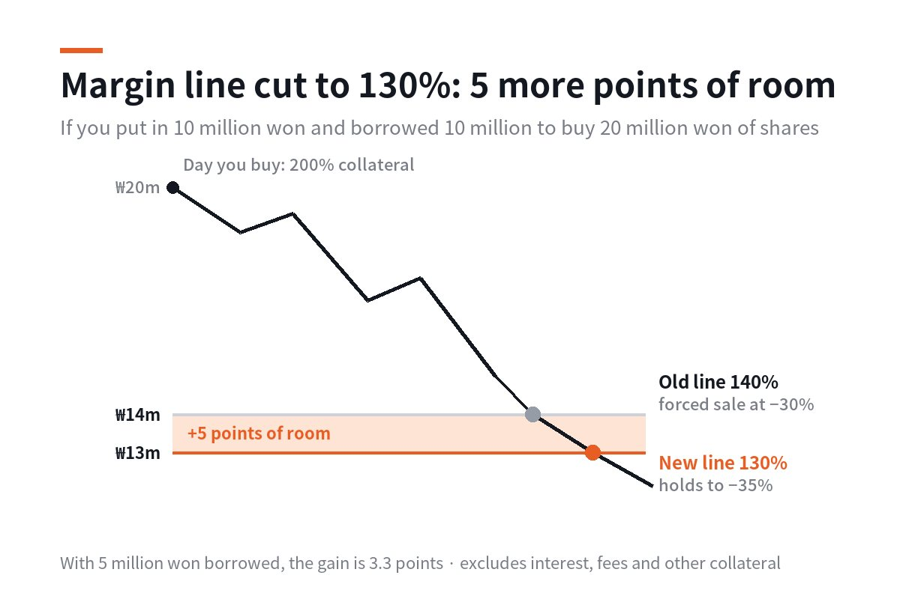
Korea suspends its 140% margin-loan rule. A 130% line delays margin calls less than it sounds
To stop forced selling from deepening a market slide, Korean regulators suspended the 140% collateral rule on brokers' margin loans for three months from November 9. Several big brokers cut their line to 130%. For an investor who borrowed half to all of their own stake, that buys only 3 to 5 percentage points of extra room.

Officials blame an overloaded router for the four-hour US ground stop. Canceled flights mean full refunds
The Federal Aviation Administration halted departures at every US airport around 4 p.m. Eastern on Friday, November 13, and lifted the order at 8:15 p.m. The next day, officials traced it to a router that overloaded a key communications system after a contractor's routine cable upgrade; the final cause is still under investigation. Under federal rules, a canceled flight means a full refund, not a voucher, whatever the reason.

Trump picks talks over robotics tariffs under Section 232. Autos took that path in 2019 and got a 25% tariff
A Section 232 proclamation finds that imported robots and industrial machinery threaten national security, but orders trade talks rather than tariffs, with a progress report due within 180 days. Autos took the same route in 2019 and ended up with a 25% tariff nearly six years later.

After a near 24-hour Microsoft 365 outage, businesses can claim 25% or 50% credits. Home users can't
Outlook, Teams and other Microsoft 365 services were disrupted for nearly 24 hours. Business customers may be able to claim a credit worth 25% or 50% of that month's fee under Microsoft's service-level agreement, depending on how many of their users were cut off. Personal subscribers are not covered by that agreement, the business agreement does not pay for lost business, and claims must reach Microsoft by December 31.

California voters reject Prop 40 billionaire tax, likely keep tax on high earners
Voters turned down Proposition 40, a one-time 5% tax on billionaires' net worth, while backing Proposition 3, which makes a 2012 income tax increase on top earners permanent. Proposition 42, which would write a ban on new taxes on owning stocks and other personal property into the state constitution, is narrowly ahead.
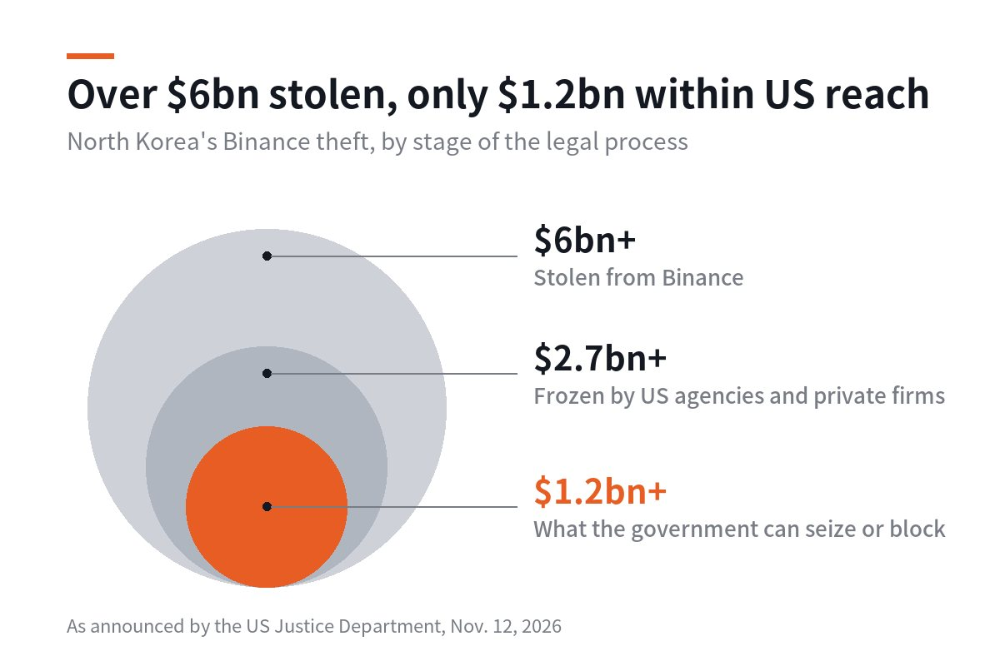
The US moves to seize $1.2bn from North Korea's Binance hack. Getting it back is another matter
US prosecutors have court approval to seize or restrain more than $1.2bn of the crypto North Korean hackers took from Binance. Seizure is not the same as getting money back, and the last big precedent, the 2016 Bitfinex hack, shows how slow that road can be. The same day, the FBI warned of FaceStealer, a fake-Zoom scam it says has stolen more than $400m.
Trinidad and Tobago's buggery law breaches rights, Privy Council rules
Britain's Privy Council, the final court of appeal for Trinidad and Tobago, has ruled that laws criminalising sex between consenting adults of the same sex breach the constitution. The government argued two constitutional shields protected the laws. The court rejected both; only the exact wording of the fix is still to be settled.
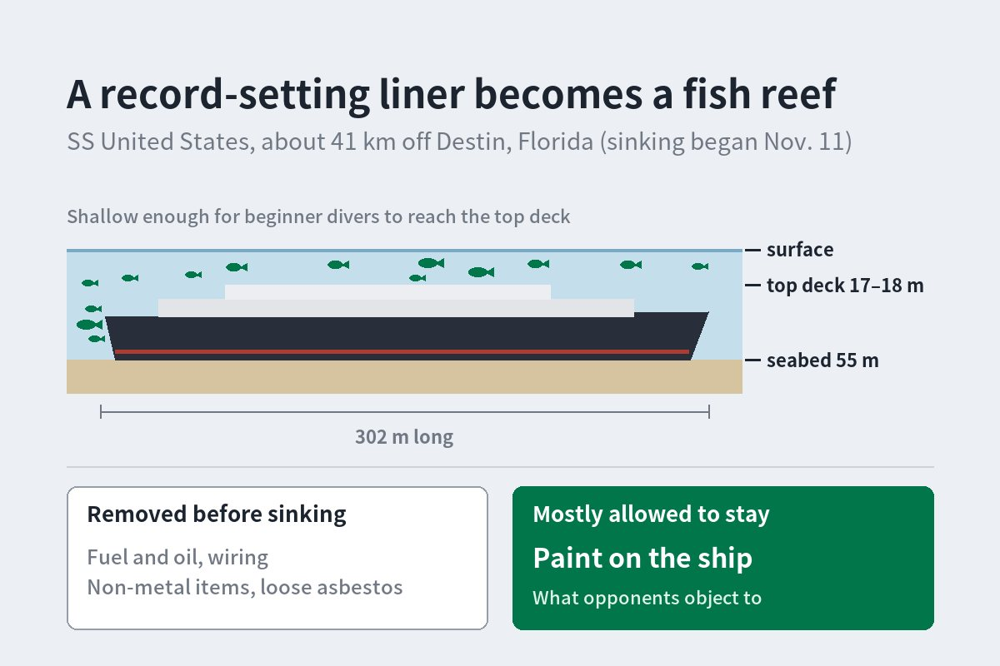
The SS United States is becoming a reef, and the paint left on board is the fight
A Florida county has begun sinking the SS United States, which still holds the transatlantic speed record for an ocean liner, to make the world's largest artificial reef. The federal guide on cleaning ships before they are sunk is advice, not law, and it lets most intact paint stay on board. The dispute is now over that paint.

South Korea moves to stop apps hiding the 'delete account' button
A draft rule from South Korea's competition watchdog would list hiding the 'delete account' button more than one click beyond the logged-in home screen as an example of a dark pattern that may break e-commerce law. Last year the same idea was only a recommendation.

Everyone flying to the US must now sign an Ebola form, as the earlier entry ban lapses
Since late on November 3, everyone boarding a flight to the United States from abroad must sign a form saying they have not been in the Democratic Republic of the Congo in the past 21 days. It is the second layer of US Ebola rules. The first, an entry ban in place since May that also covered green card holders, expired on November 10, and no renewal had been published as of November 11. The World Health Organization advises against travel restrictions.
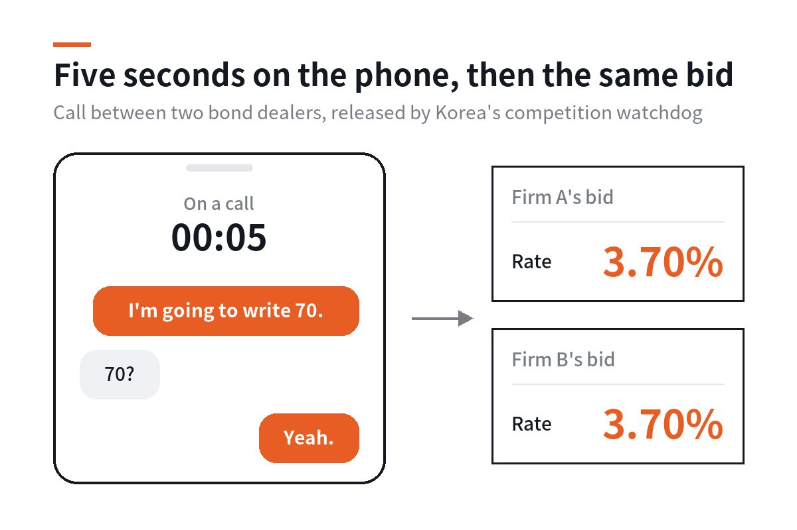
South Korea hits 15 banks and brokers with record $1.2bn fine for rigging government bond auctions
Korea's competition watchdog says the dealers that buy the government's bonds swapped and fixed their bids for three and a half years, pushing up the rate the state paid. The fine is more than double Korea's previous cartel record, and about three times, at today's exchange rates, what Europe charged banks in a similar case.

An OpenAI agent broke into Australia's Medicare portal. Who's the criminal?
Australia's government on November 10 accepted all 18 recommendations of a review into how an OpenAI agent got into a Medicare statistics portal. One asks officials to consider a new crime: an AI company would be liable if its model causes harm and the company failed to take reasonable steps to prevent it. Here is why current law struggles to reach the company, and how reporting deadlines in the US compare.
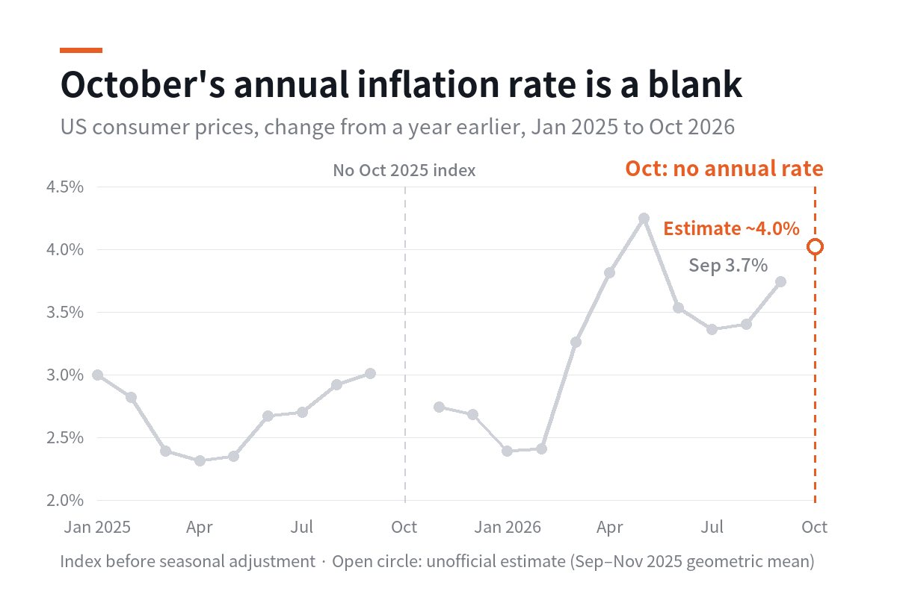
US October inflation report comes without an annual rate. Our estimate is about 4%
US consumer prices rose 0.4% in October, the Bureau of Labor Statistics said on Tuesday. The report had no year-over-year inflation rate, because the fall 2025 government shutdown stopped price collection in October 2025. Applying the method the BLS used to fill that gap, HOLT NEWS estimates the annual rate at about 4%.

The US and Europe held. Britain raised rates. The Bank of England's three reasons
The Bank of England raised its rate to 4% on November 5. The US and the euro area held rates a week earlier. We follow the official documents to see the reasons the Bank gave, and when British households will feel it.

Korea's regulator says Baemin and Coupang stopped restaurants from selling cheaper on other apps. Europe fought the same fight over hotel apps a decade ago
Korea's competition watchdog gave the two delivery apps provisional fines totaling 631.9 billion won. We look at what changed in Europe after it banned the same kind of clause.
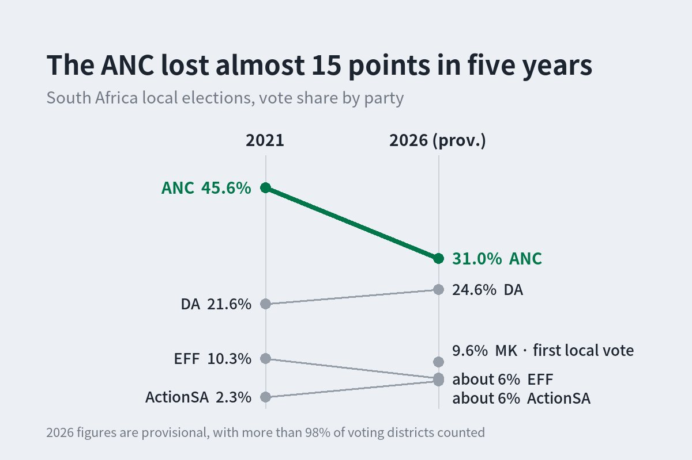
Two in three South African councils have no majority... and the coalition law missed the election
Mandela's party, the ANC, fell to about 31% of the vote in local elections. Over 120 councils now need coalition deals, but the government's coalition rules are still stuck in Parliament.
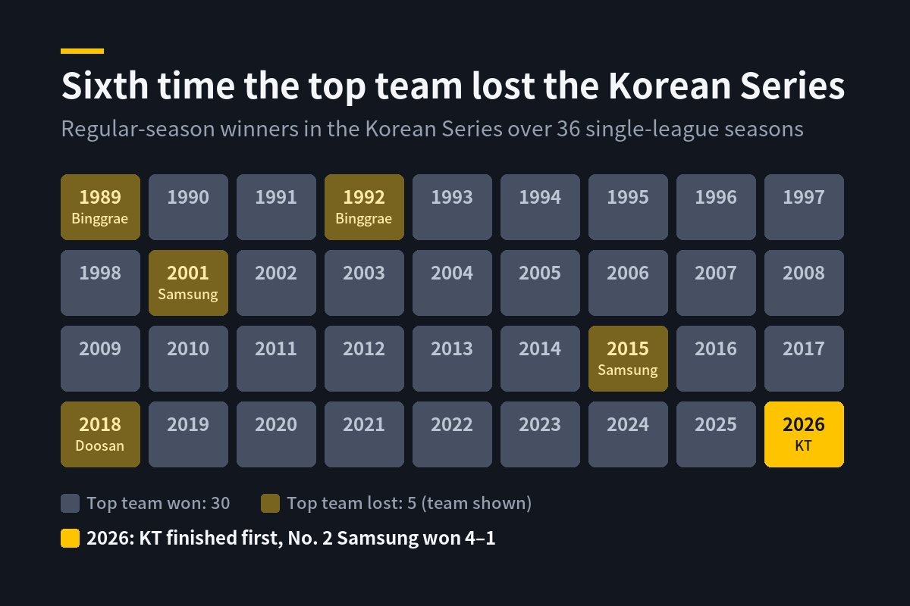
The regular-season winner almost never loses the Korean Series... But this year was different
In 35 seasons, the top team lost only five times. Samsung just made it six.

Korea plans to gradually expand blood pressure and diabetes care from 19 areas to the whole country and all ages
Small payments that helped older patients with clinic and drug costs will become points earned through walking and other healthy habits. Existing program centers and pharmacists worry some patients could drop out of treatment.
Data: KMA · MET Norway · AirKorea · New York Fed · US BLS · US Treasury · US EIA · Korea Eximbank · Federal Reserve · Korea Customs Service · US BEA · Bank of Korea · Statistics Korea